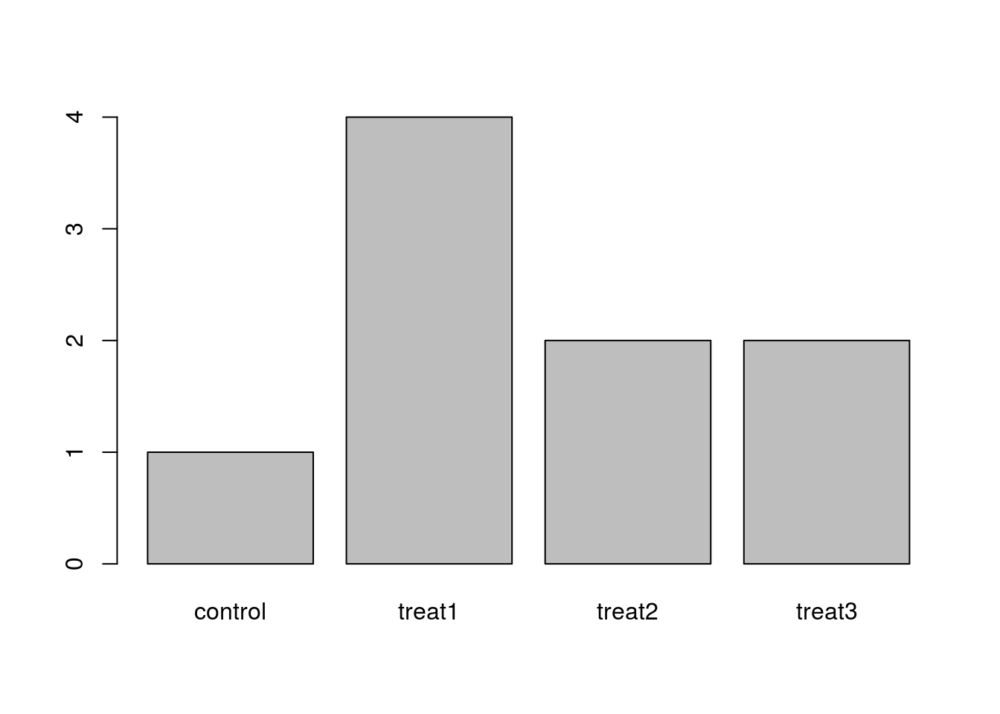

Learning Objectives
- load external data (CSV files) in memory using the survey table (
surveys.csv) as an example- explore the structure and the content of a data frame in R
- understand what factors are and how to manipulate them
We are studying the species and weight of animals caught in plots in our study area. The dataset is stored as a CSV file: each row holds information for a single animal, and the columns represent:
| Column | Description |
|---|---|
| record_id | Unique id for the observation |
| month | month of observation |
| day | day of observation |
| year | year of observation |
| plot_id | ID of a particular plot |
| species_id | 2-letter code |
| sex | sex of animal (“M”, “F”) |
| hindfoot_length | length of the hindfoot in mm |
| weight | weight of the animal in grams |
| genus | genus of animal |
| species | species of animal |
| taxa | e.g. Rodent, Reptile, Bird, Rabbit |
| plot_type | type of plot |
We are going to use the R function download.file() to download the CSV file that contains the survey data from figshare, and we will use read.csv() to load into memory (as a data.frame) the content of the CSV file.
To download the data into the data/ subdirectory, do:
download.file("https://ndownloader.figshare.com/files/2292169",
"data/portal_data_joined.csv")You are now ready to load the data:
surveys <- read.csv('data/portal_data_joined.csv')This statement doesn’t produce any output because, as you might recall, assignment doesn’t display anything. If we want to check that our data has been loaded, we can print the variable’s value: surveys.
Wow… that was a lot of output. At least it means the data loaded properly. Let’s check the top (the first 6 lines) of this data.frame using the function head():
head(surveys)#> record_id month day year plot_id species_id sex hindfoot_length weight
#> 1 1 7 16 1977 2 NL M 32 NA
#> 2 72 8 19 1977 2 NL M 31 NA
#> 3 224 9 13 1977 2 NL NA NA
#> 4 266 10 16 1977 2 NL NA NA
#> 5 349 11 12 1977 2 NL NA NA
#> 6 363 11 12 1977 2 NL NA NA
#> genus species taxa plot_type
#> 1 Neotoma albigula Rodent Control
#> 2 Neotoma albigula Rodent Control
#> 3 Neotoma albigula Rodent Control
#> 4 Neotoma albigula Rodent Control
#> 5 Neotoma albigula Rodent Control
#> 6 Neotoma albigula Rodent ControlA data.frame is the representation of data in the format of a table where the columns are vectors that all have the same length. Because each column is a vector, they all contain the same type of data. We can see this when inspecting the __str__ucture of a data.frame with the function str():
str(surveys)Based on the output of str(surveys), can you answer the following questions?
surveys?As you can see, many of the columns consist of integers, however, the columns species and sex are of a special class called a factor. Before we learn more about the data.frame class, let’s talk about factors. They are very useful but not necessarily intuitive, and therefore require some attention.
Factors are used to represent categorical data. Factors can be ordered or unordered, and understanding them is necessary for statistical analysis and for plotting.
Factors are stored as integers, and have labels associated with these unique integers. While factors look (and often behave) like character vectors, they are actually integers under the hood, and you need to be careful when treating them like strings.
Once created, factors can only contain a pre-defined set of values, known as levels. By default, R always sorts levels in alphabetical order. For instance, if you have a factor with 2 levels:
sex <- factor(c("male", "female", "female", "male"))R will assign 1 to the level "female" and 2 to the level "male" (because f comes before m, even though the first element in this vector is "male"). You can check this by using the function levels(), and check the number of levels using nlevels():
levels(sex)
nlevels(sex)Sometimes, the order of the factors does not matter, other times you might want to specify the order because it is meaningful (e.g., “low”, “medium”, “high”) or it is required by a particular type of analysis. Additionally, specifying the order of the levels allows for level comparison:
food <- factor(c("low", "high", "medium", "high", "low", "medium", "high"))
levels(food)
food <- factor(food, levels=c("low", "medium", "high"))
levels(food)
min(food) ## doesn't work#> Error in Summary.factor(structure(c(1L, 3L, 2L, 3L, 1L, 2L, 3L), .Label = c("low", : 'min' not meaningful for factorsfood <- factor(food, levels=c("low", "medium", "high"), ordered=TRUE)
levels(food)
min(food) ## works!In R’s memory, these factors are represented by integers (1, 2, 3), but are more informative than integers because factors are self describing: "low", "medium", "high"" is more descriptive than 1, 2, 3. Which is low? You wouldn’t be able to tell just from the integer data. Factors, on the other hand, have this information built in. It is particularly helpful when there are many levels (like the species in our example data set).
If you need to convert a factor to a character vector, you use as.character(x).
Converting factors where the levels appear as numbers (such as concentration levels) to a numeric vector is a little trickier. One method is to convert factors to characters and then numbers. Another method is to use the levels() function. Compare:
f <- factor(c(1, 5, 10, 2))
as.numeric(f) ## wrong! and there is no warning...
as.numeric(as.character(f)) ## works...
as.numeric(levels(f))[f] ## The recommended way.Notice that in the levels() approach, three important steps occur:
levels(f)as.numeric(levels(f))f inside the square bracketsThe function plot() can be used to quickly create a bar plot of a factor. For instance, for the factor exprmt <- factor(c("treat1", "treat2", "treat1", "treat3", "treat1", "control", "treat1", "treat2", "treat3")), the code plot(exprmt) gives you a barplot of the number of observations at each level, as shown below.
str to inspect the factor.)